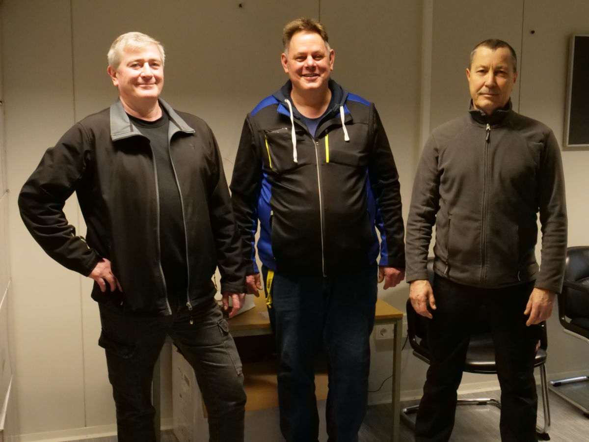

Unsere Hausmeister Herrn Batzem, Herrn Fink und Herrn Lebedev sind vor Ort die ersten Ansprechpartner zu allen Fragen rund um das Schulgebäude und das Schulgelände.
Als Repräsentanten des Schulträgers tragen sie Verantwortung für den baulichen Zustand der Schule. Zudem gehören die Wartung, Pflege und Instandhaltung des Schulgebäudes sowie der gesamten Einrichtung zu ihren täglichen Aufgaben.
Sie sorgen dafür, dass der Schulalltag reibungslos funktioniert und das Schulgelände in einem sicheren und gepflegten Zustand bleibt.
📧 E-Mail: hausmeister@ncg-online.de
📍 oder über das Sekretariat erreichbar